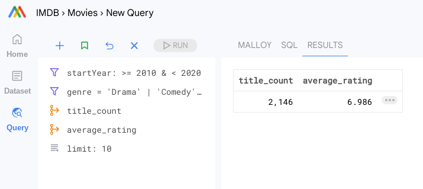
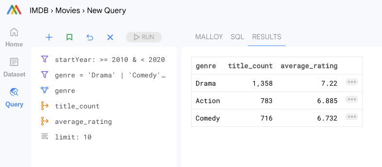
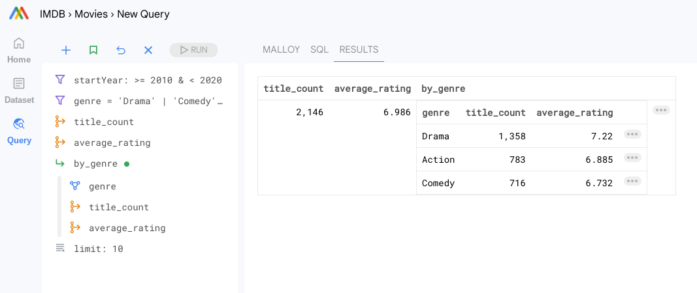
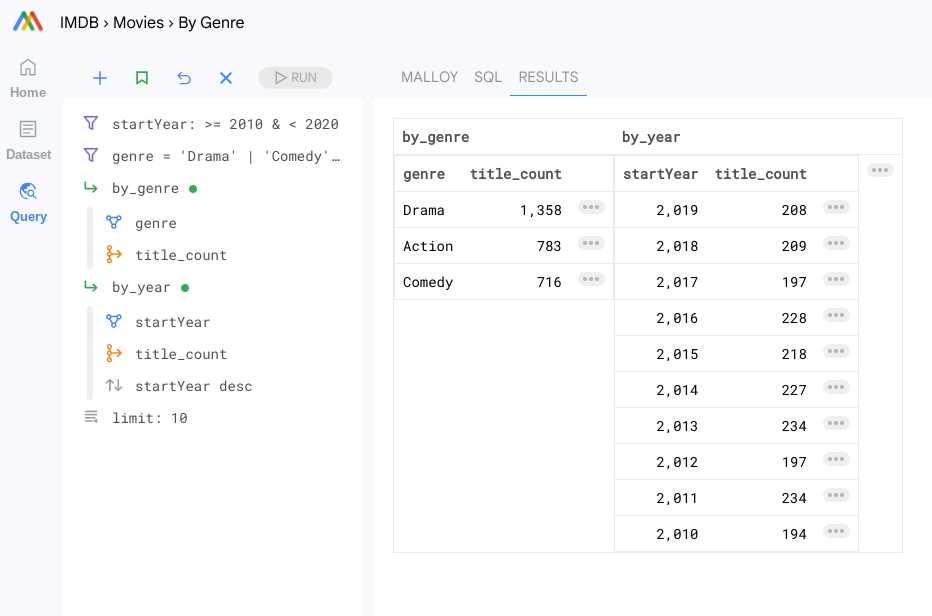
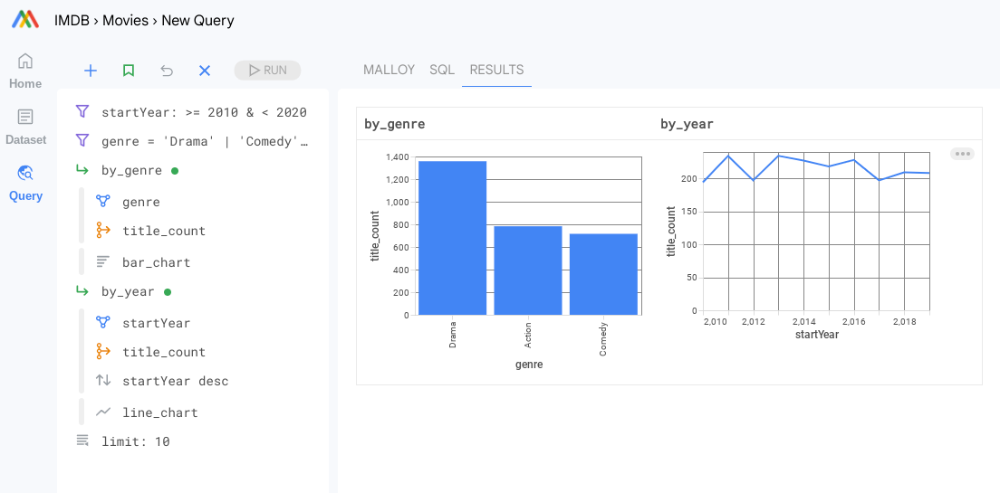
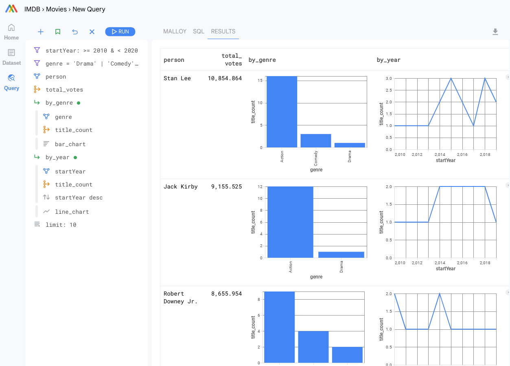

All Posts
All Posts
Grouping by some attribute is the core operation of most data analysis
December 1, 2022 by lloyd tabb
Malloy is an new experimental data language. Malloy's Composer, shown here, offers allows you to easily explore complex data.
In data analysis, one operation, dimensionalization, stands above the rest. In SQL, grouping by a column and computing aggregate statistics (measures/metrics) about the elements that fall into that group is the fundamental motion of nearly all data analysis.
In SQL, unfortunately, dimensionalization isn't always straight forward. The way that you relate data in a query can affect aggregate calculations and make them incorrect at times. The general solution to this is to make dimensional fragments and link them together, but that adds a lot of complexity.
Malloy is interesting in that aggregates operate independently from relations. Because of this innovation, Malloy offers a degree of dimensional flexibility not available anywhere else.
Let's take a tour.
IMDB, for example
In the IMDB for example. There are movies (titles), people, genres and ratings. The relations and some basic calcuations are encoded in this 75 line data model on github.
These are live examples, click “Try it!” to run any of the queries.
How many movies?
Lets take a look at movies and filter to just three genres, Drama, Comedy and Action. We will also filter to just movies from 2010 until 2020. The first query we run shows there are 2146 movies with an average rating of 6.986.
Dimensionalize by genre
By dimensionalizing (grouping by) genre, we can see the number of movies that are in a particular genre. But if we add up the numbers 1358 + 783 + 716 we get 2857. Wait, Why? I thought the number of titles was only 2146? Movies can have multiple genres. Movies can appear in multiple groupings.
Top level query is aggregates plus nesting.
Malloy can compute mulitple levels of dimensionality simultaneously. One way Malloy does this is through nesting queries. Nested queries are expressed exactly the same as top level queries. In the query below, we pick our top level measures as well as building a nested query that is essentially the same shape as the one above.
While the query above is relatively easy to understand, it is quite difficult to express in SQL. Malloy hides this complexity from us. We can see the SQL for any query by bonking the SQL tab. All Malloy queries execute as a single SQL query so the data is only read once.
all function escapes grouping
Another way to work with dimensionality in Malloy with ungrouped aggregate functions. The all() function can be used to make calculations independently of dimensional grouping in the current query, but return results in the same table. In the example below, we compute all_titles as all(title_count) and all_average_rating as all(average_rating). Any measure can be used within the all function. Fine grain control over which columns to escape is also available, see the Malloy documentation on Ungrouped Aggregates.
Percent of Total
Percent of total tell us about a groups relationship to it's parent. What percent of movies are Drama?, Comedy?. Using the calculation for percent_of_titles is title_count / all(title_count) can show us. Malloy composer allow us to style this number as a percentage. Notice that the percentages sum to greater then 100%. Movies can have mulitple genres.

Nesting adds dimensionality (and perspective)
Grouping by year and nesting our by_genre query allows us to gain perspective over time. Notice that we are free to include aggregate computations at any level of nesting.
Running queries side by side with a shared filter
A useful pattern is to nest several queries at the top level. This mimics a traditional dashboard in other tools. The difference here is that the data is all executed in a single query.
Styling Results
We can add styles to any of the nested queries to have them rendered as charts.
Adding more dimensionality
Let's look at the top people in the industry by grouping by person.
Dimensional Freedom
Malloy will compute aggregate calculations correctly independently from dimensionalization. This freedom gives you much more flexibility in building tooling to understand your data.